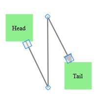
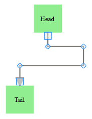

Line connectors can be used to draw polylines using the IntermediatePoints property. Polylines are drawn using intermediate points for straight lines and orthogonal line connectors. For orthogonal lines, intermediate points are updated so that the adjacent line segments are always perpendicular to each other. These intermediate points are visually represented as vertices.
Polylines
Straight line connectors can be used as polylines by using the IntermediatePoints property. This can be achieved at run time by holding CTRL + SHIFT and clicking on the line, or by simply changing the IntermediatePoints collection. This will be reflected in the line connector.

Figure 65: Polyline
Poly-Orthogonal Lines
Orthogonal lines can have more than two intermediate points. All these intermediate points can be dragged. Unlike straight lines, orthogonal lines maintain their perpendicularity even after the intermediate points are dragged.

Figure 66: Poly-Orthogonal Line
Use Case Scenarios
Polylines can be used in such cases as connecting elements in a flow chart.
Properties
|
Property |
Description |
Type |
Data Type |
|
IntermediatePoints |
Gets or sets the intermediate points. |
Server side. |
List<DiagramPoint> |
|
LineDistributingEnabled |
Gets or sets a value indicating whether line distributing is enabled. Default value is False. |
Server side. |
Boolean |
Methods
|
Method |
Description |
Parameters |
Type |
Return Type |
|
setLineDistributingEnabled |
sets a value indicating whether line distributing is enabled/disabled. |
LineId—ID of the LineConnector, Boolean value—Enable(true)/Disable(false). |
Client side |
void. |
Sample Link
Dashboard > ASP.NET MVC > Diagram > Getting Started > Line Connector Demo
 Adding Polylines to an
Application
Adding Polylines to an
Application